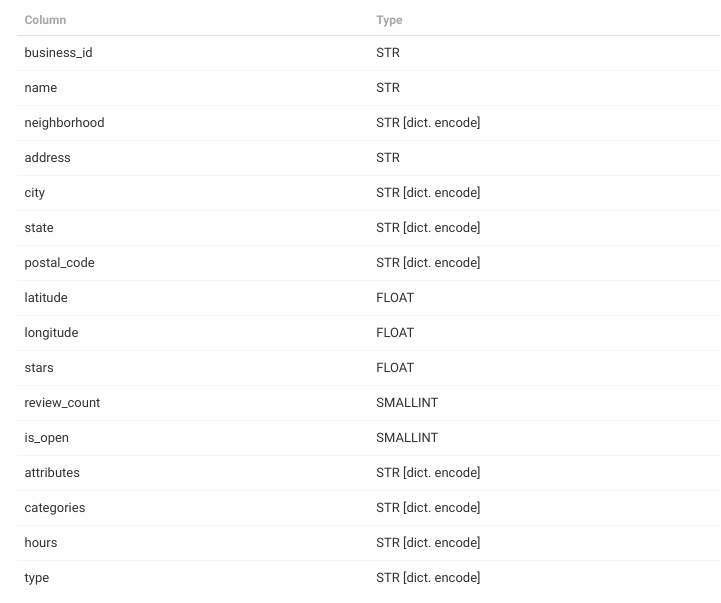

Benchmark Test for Multivariable data
David Camilo Mera D
2018
Proof of Concept
- 3 database engine to test:
- MySQL Community Edition v. 8.0
- MongoDB Community Server v. 4.0
- Omni-sci (formely MapD) Community Edition v. 4.0
- dataset:
- Rows: 144,072
- Columns: 16
- 
Query hits vs Response Time
Query hits vs Response Time
Testing with large data
- Synthetic dataset
- Rows: 3,144,072
- Columns: 16
- DB optimizations:
- MySQL
- innodb_buffer_pool_size: chunk size to perform operations, larger is better
- innodb_log_buffer_size: buffer to perform operations, larger is better
- innodb_read_io_threads: I/O threads to perform read operations
- non unique keys (indexes): stars, state, review_count
- MongoDB
- wiredTigerCacheSizeGB: internal cache
- keys: stars, state, stars-state
- Use $match in aggregation pipeline
- Use allowDiskUse option to perform sort in aggregation pipeline (limited to 10MB). It enables to write temporary files
- Omni-sci
- num-gpus: Number of GPUs to use. The default is -1, which means use all available GPUs.
- allow-cpu-retry: to direct queries, that do not fit in the GPU memory available, to fall back and be executed on the CPU
Query hits vs Response Time - large data
Query hits vs Response Time - large data
Response Time - large data
Response Time - large data
Conclusions
- Omni-sci excels at performing queries and aggregations on large datasets due to repetitive operations like grouping can be performed in a parallel maner
- Omni-sci doesn't excels at performing simple queries and aggregations on small datasets. For this purpouse, MySQL is faster than Omni-sci
- In case of performing queries and aggregations on large datasets, MySQL seems to be the next option to take into account.
The queries performed on MySQL didn't fulfill the minimum threshold (200 ms). However, the median of execution time per query was faster than
the median of execution time of the queries performed on MongoDB
- TO-DO: perform benchmarking tests with MongoDB Enterprise edition, which use in memory database engine
/